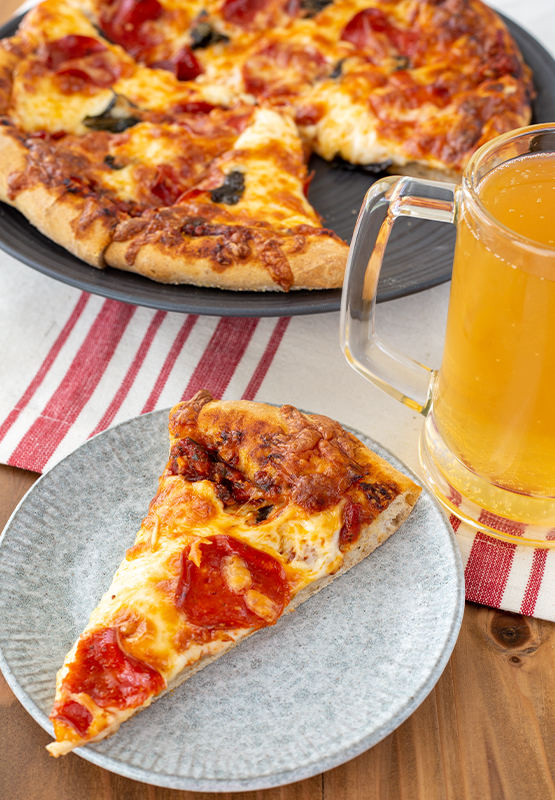

Midgar Special

Description
A delicious Rasberry family special that is sure to leave you wanting more. Created by a special friend's
talented mother, it is a home cooked meal that will surly bring a smile to your face. In honor of that special
friend, we present this dish. And while it isn't a dish we can make on the regular, it's something special that
you can share with loved ones.
Ingredients
Pizza Dough
- 600g Bread Flour
- 90g Dark Rye Flour
- 7g Active Dry Yeast
- 10g Sugar
- 5g Salt
- 3g Onion Powder
- 7g Ground Fennel Seeds
- 2cups Water
- 2tbsp Olive Oil
Pizza Sauce
- 2tbsp Olive Oil
- 1tbsp Unsalted Butter
- 3 Anchovies
- 6 Garlic Cloves, minced
- 28oz Whole San Marzano Tomatoes
- 2tbsp Dried Oregano
- 2tsp Sugar
- Salt
- Pepper
Assembly
- Pepperoni
- Basil, chopped
- 32oz Mozzarella Cheese, shredded
- 9oz Fontina Cheese, shredded
- 8oz Sharp Cheddar Cheese, shredded
Steps
Pizza Dough
- One day before you plan to make the pizza, prepare the dough
- Place both flours, yeast, sugar, salt, garlic powder, and ground fennel seeds in a bowl of a stand mixer
- In a bowl, combine the water and olive oil
- Pour the liquid into the bowl of the stand mixer
- Place the bowl in the stand mixer and mix on low w/ a dough hook until all the ingredients come together
- When it has formed into a ball, increase the speed of the mixer to medium and knead in the machine for 5
minutes
- Lightly flour your counter top and place the kneaded dough there
- Smooth the dough into a ball
- Spray a large bowl w/ nonstick spay, place the dough ball into the bowl and cover w/ plastic wrap
- Place in refrigerator for 18 to 24 hours
Pizza Sauce
- Heat a saucepan w. olive oil and butter over medium high heat
- Add the anchovies and lightly mash it into small pieces
- Add the garlic and cook until the garlic is golden brown, about 2 to 3 minutes
- Add the san marzano tomatoes and stir together well
- Add the oregano, red pepper flakes, basil, and sugar
- Stir well while lightly mashing the whole tomatoes
- Reduce the heat to low/medium low and allow the sauce to simmer for about 45 minutes or until thickened while
stirring often amd fully mashing the tomatoes by the time it is done cooking
- Taste and season w/ salt and pepper to your liking
- If prepared the day before, let it cool then store in an airtight container in the refrigerator
Assembly
- The next day, remove dough from refrigerator at least 30 minutes before you start to prepare dish
- Punch the dough down and place it onto a lightly floured counter top
- Split into 4 portions and form into balls, cover with a clean towel and let it rest for 30 minutes
- Preheat oven to 475°F
- Lightly flour your work area and take one of the dough portions and pound into a disk shape
- Continue to stretch the dough into a disk shape until it is about the size of a small to medium pizza
- Prepare a round baking tray by spraying with a nonstick spray and sprinkling with cornmeal
- Place the dough onto the tray and repeat with the other portions
- Spread the pizza sauce on top of each dough to your liking
- Add a generous layer of the cheeses and top with pepperoni and basil
- Finally top with a little more cheese and place the pizza in the oven to bake for 10 minutes
- Turn the pizza and then bake for another 10 minutes or until crust has browned nicely
- After the pizza has cooked, remove it from the oven and allow it to rest for at least 5 minutes
- Slice, plate, and enjoy
(Credits) Victoria Rosenthal